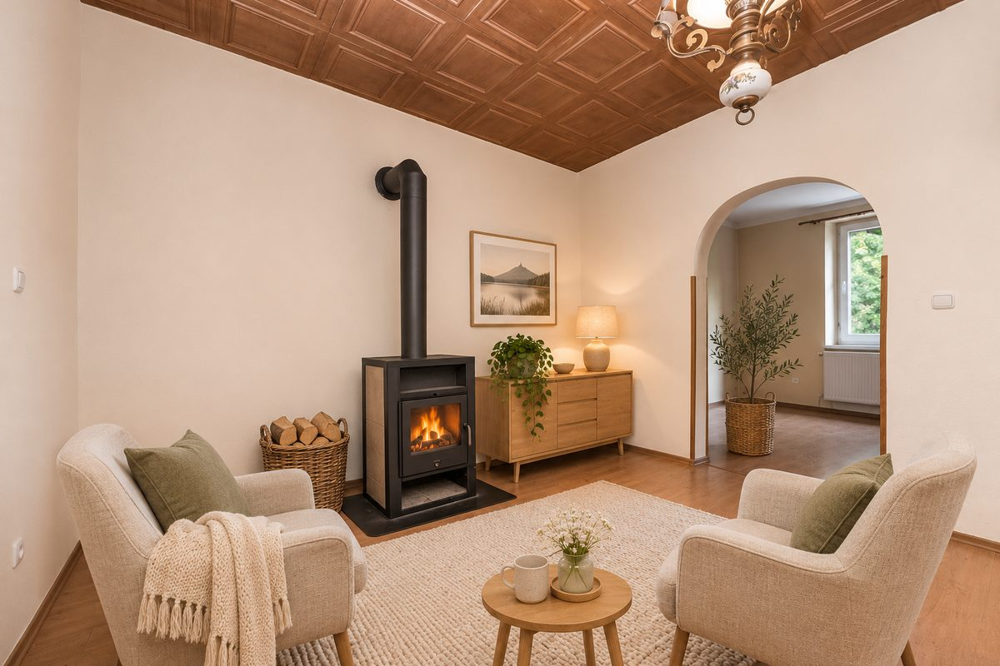
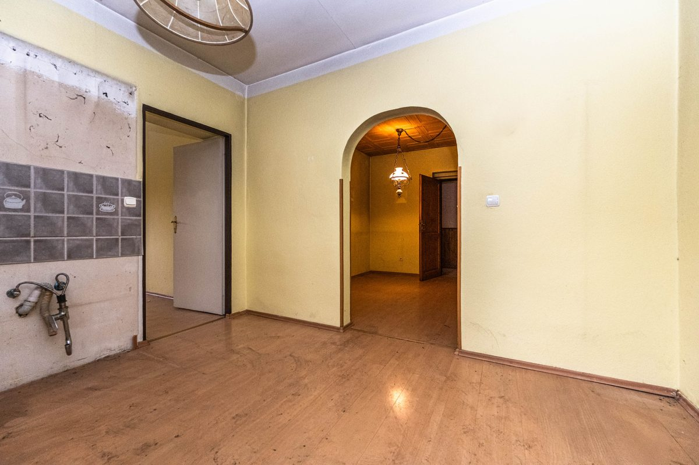
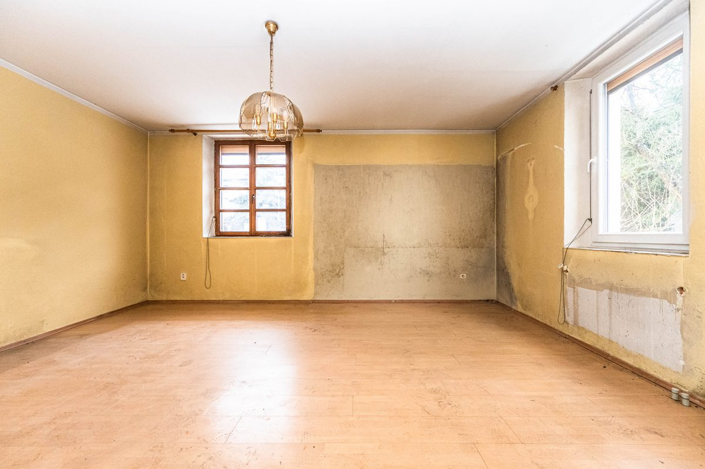
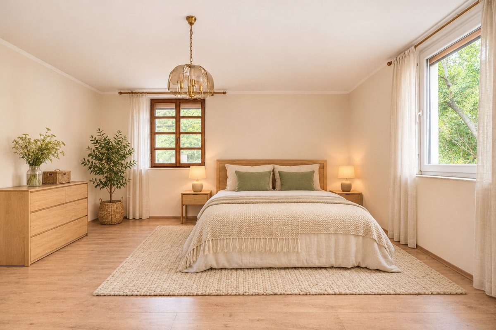
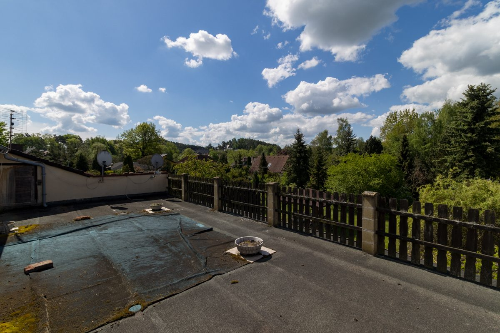
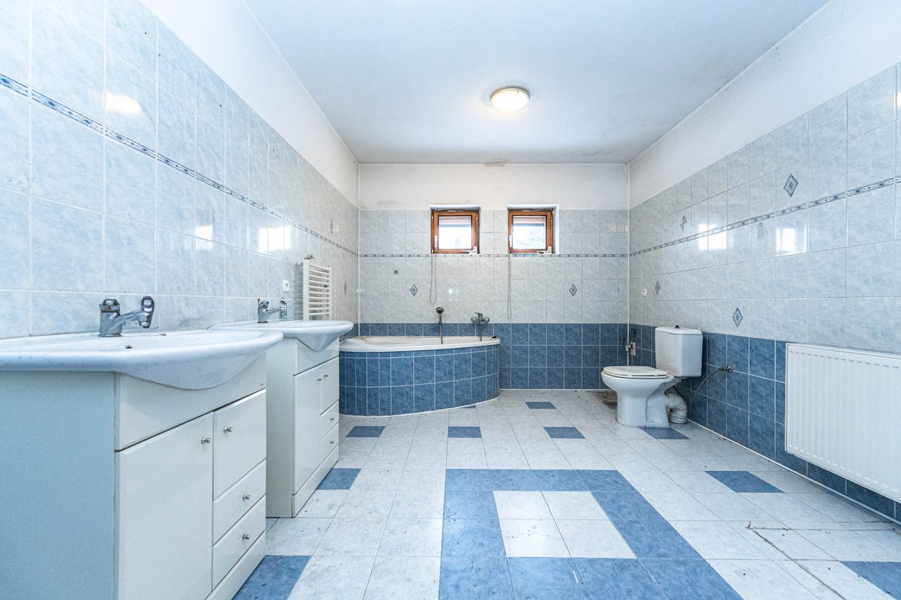

Vizualizace
 DnesVizualizace
DnesVizualizace

 DnesVizualizace
DnesVizualizace
 DnesVizualizace
DnesVizualizace
 DnesVizualizace
DnesVizualizace
Jak může dům vypadat
Posuňte jezdcem: vlevo dnešní stav, vpravo vizualizace. Zdi, okna a dveře zůstávají, mění se povrchy a zařízení.
DnesVizualizacePodkroví: projekt dvou bytů

DnesVizualizaceObývák s kamny

DnesVizualizaceNová kuchyň


DnesVizualizaceLožnice

DnesVizualizaceStřešní terasa nad zahradou

DnesVizualizaceKoupelna s vanou
Vizualizace jsou ilustrační a ukazují jednu z možností. Nejsou součástí prodeje.